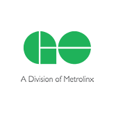

-

Grade 10
My first CS class
Excited to be exposed to new information, in an area that I am unfamiliar with, I enjoyed every minute of it. I learned the principles of object oriented programming and created my own applications.
-

Sept. 2013
University Life
Began my journey, studying Computer Science / Business Administration (Double Degree) at the University of Waterloo and Wilfred Laurier University. Definitely enjoying the challenge, and hoping to put it to use as an entrepreneur someday!
-

May 2014
GO Metrolinx!
During my co-op term at Metrolinx, I have learned many new things. Using ASP.NET, I created Proof of Concept projects such as a Content Delivery Network and a data visualization tool. Through it I've had the chance to learn many new technologies such as WCF services, SignalR, Ajax, JavaScript...
-

Sept. 2014
Who run the world? GIRLS!
Acting as the Undergrad Rep for Women in Computer Science, I hope to empower current and future females in IT to embracing their passion for CS.
-
Excited to
see where life
brings me
...